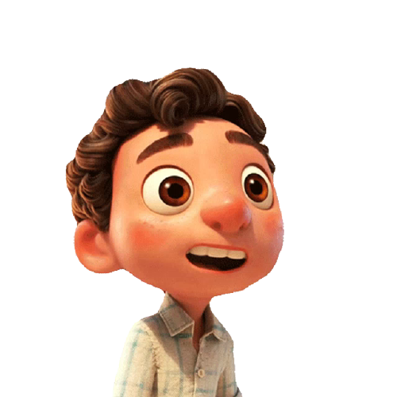

Spartan Press Website
My love for writing started when I was about nine years old learning English as a new language. Now, I am the Editor-In-Chief for my school newspaper and write about the current events and issues facing our generation.
Check out some of my pieces, happy reading!
check out some of my projects:
 July 16, 2021
I worked on this project as part of the GirlsWhoCode Program. I forked it from their sample. I had so much fun learning about it and presenting it to our Disney Partners. It was also my first time using Javascript for interactivity. Ever since watching Luca, I've been having an obsession with the characters. They're so adorable! So it was no surprise that I used Luca as my theme.
The languages I used are HTML,CSS, and Javascript.
July 23, 2021
For the final project of GirlsWhoCode program, we had to make a activist toolkit to share awareness about a cause we care about. I chose the impact of Technology in our environment. It was very fitting since it was a tech-program. I also presented it to our Disney partners! I believe this is the first project I coded from scratch.
Note: It is not quite finished.
I mainly used HTML and CSS, and I incoporated a little bit of JavaScript with the fact generator!